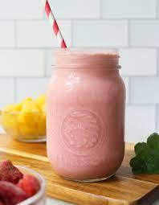

Very Berry Smoothie

Description
Smoothies are a fun and delicious way to fulfill your daily requirement of fruit intake. They
are an extremely popular snack, and can even provide a meal depending on the ingredients! Due to
the large range of options for ingredients to choose from, smoothies are also very versatile.
This article will teach you how to blend your very own Very Berry Smoothie. This recipe
contains a variety of fruits including blueberries, strawberries, blackberries, raspberries, and
cherries. These fruits, along with the other ingredients, provide important nutrients such as various
vitamins, potassium, calcium, antioxidants, and fiber. Furthermore, smoothies are just as fun to make
as they are to drink. You'll find that experimenting with different ingredients can lead to all sorts
of new recipes!
Ingredients
Main Ingredients
- berries (strawberries, blueberries, blackberries, raspberries, and cherries)
- 1 banana
- raw spinach
- flax seeds
- granulated sugar
- almond milk
Cookware
Steps
- Starting with the almond milk, place all of the main ingredients into the blender in desired quantities.
- Close the lid and start the blender. Every 30 seconds or so, stop the blender and use the spoon to break up
any ice chunks or ingredients that have become stuck in the blender's blades.
- Add additional ingredients to taste. Blend until the mixture reaches desired consistency and taste. Write
down the quantities of each ingredient used for future reference.
- Pour the smoothie into a cup. Use a mason jar or add a straw or whole berries on top for presentation.
- Enjoy!
All Recipes